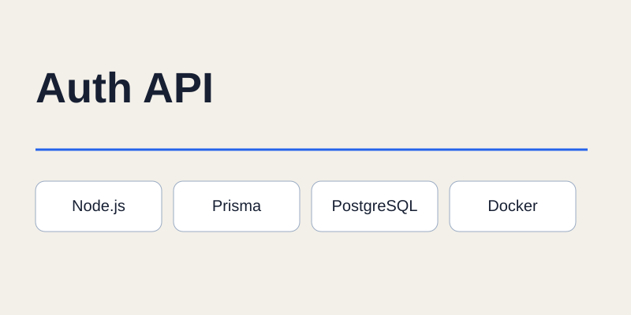

Auth API
API REST
API REST con Node.js y Express, PostgreSQL, Prisma y migraciones. Registro y login con bcryptjs, autenticación JWT y sesiones persistentes con revocación real. Incluye gestión y desvinculación de dispositivos, cambio de contraseña, logout y eliminación de cuenta. Usa middleware de autenticación y errores, Docker Compose y una colección de Postman para validar los endpoints.
- Node.js
- Express
- PostgreSQL
- Prisma
- JWT
- bcryptjs
- Docker Compose
- Postman